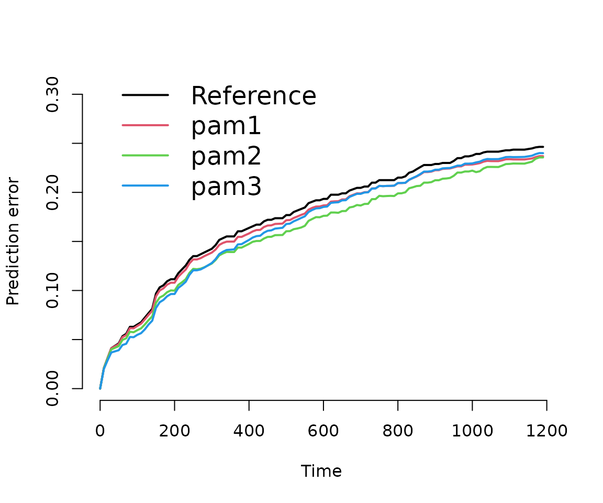

library(dplyr)
library(mgcv)
library(pammtools)
library(ggplot2)
theme_set(theme_bw())
library(survival)
library(pec)In this vignette we illustrate how to obtain model performance
measures for PAMMs, specifically the C-Index and (Integrated) Brier
Score (IBS). Both is achieved by providing an
predictSurvProb extension for PAMMs, which allows the usage
of the pec package (Mogensen,
Ishwaran, and Gerds 2012) for model evaluation.
Below we split the tumor data contained within the
package and split it into a training and a test data set. The former is
used to train the models, the latter to obtain out of sample performance
measures.
In order to work with the pec or cindex
functions from the pec package, the models
have to be fit using the pamm function (which is a thin
wrapper around mgcv::gam). Once the models are fit, the
prediction error curves (PEC) and C-Index can be computed similar to any
other model (see respective help pages ?pec::pec and
?pec::cindex). Note that for technical reasons, evaluation
of pamm objects should not start at exact 0 (see
times and start arguments below).
data(tumor)
## split data into train and test data
n_train <- 400
train_idx <- sample(seq_len(nrow(tumor)), n_train)
test_idx <- setdiff(seq_len(nrow(tumor)), train_idx)
## data transformation
tumor_ped <- as_ped(tumor[train_idx, ], Surv(days, status)~.)
# some simple models for comparison
pam1 <- pamm(
formula = ped_status ~ s(tend) + charlson_score + age,
data = tumor_ped)
pam2 <- pamm(
formula = ped_status ~ s(tend) + charlson_score + age + metastases + complications,
data = tumor_ped)
pam3 <- pamm(
formula = ped_status ~s(tend, by = complications) + charlson_score + age +
metastases,
data = tumor_ped)
# calculate prediction error curves (on test data)
pec <- pec(
list(pam1 = pam1, pam2 = pam2, pam3 = pam3),
Surv(days, status) ~ 1, # formula for IPCW
data = tumor[test_idx, ], # new data not used for model fit
times = seq(.01, 1200, by = 10),
start = .01,
exact = FALSE
)The results illustrate that no one model is not necessarily better
w.r.t. the prediction error for all time-points. For example
pam3 is better than pam2 in the beginning and
worse towards the end. Similarly, the integrated brier score (IBS) also
depends on the evaluation time.
# plot prediction error curve
plot(pec)
# calculate integrated brier score
crps(pec, times = quantile(tumor$days[tumor$status == 1], c(.25, .5, .75)))##
## Integrated Brier score (crps):
##
## IBS[0.01;time=203) IBS[0.01;time=533) IBS[0.01;time=1120)
## Reference 0.066 0.121 0.172
## pam1 0.064 0.117 0.166
## pam2 0.060 0.109 0.157
## pam3 0.056 0.109 0.162Exemplary, we calculate the C-Index, however, note the warning message and the cited literature.
cindex(
list(pam1 = pam1, pam2 = pam2, pam3 = pam3),
Surv(days, status) ~ 1,
data = tumor[test_idx, ],
eval.times = quantile(tumor$days[tumor$status == 1], c(.25, .5, .75)))##
## The c-index for right censored event times
##
## Prediction models:
##
## pam1 pam2 pam3
## pam1 pam2 pam3
##
## Right-censored response of a survival model
##
## No.Observations: 376
##
## Pattern:
## Freq
## event 180
## right.censored 196
##
## Censoring model for IPCW: marginal model (Kaplan-Meier for censoring distribution)
##
## No data splitting: either apparent or independent test sample performance
##
## Estimated C-index in %
##
## $AppCindex
## time=203 time=533 time=1120
## pam1 68.9 63.7 60.9
## pam2 77.6 69.7 63.8
## pam3 77.7 67.0 58.9## Warning in summary.Cindex(x, print = TRUE, ...): The C-index is not proper for t-year predictions. Blanche et al. (2018), Biostatistics, 20(2): 347--357.
##
## Consider using time-dependent AUC instead: riskRegression::Score